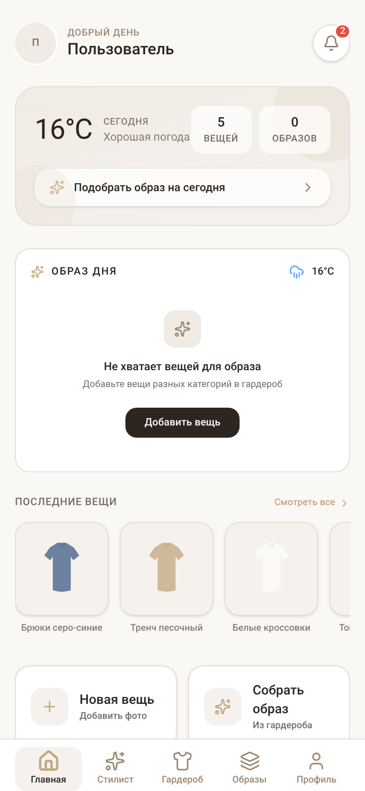
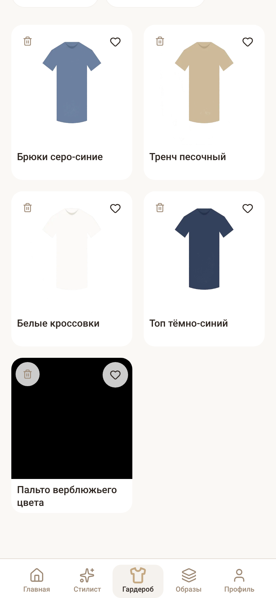
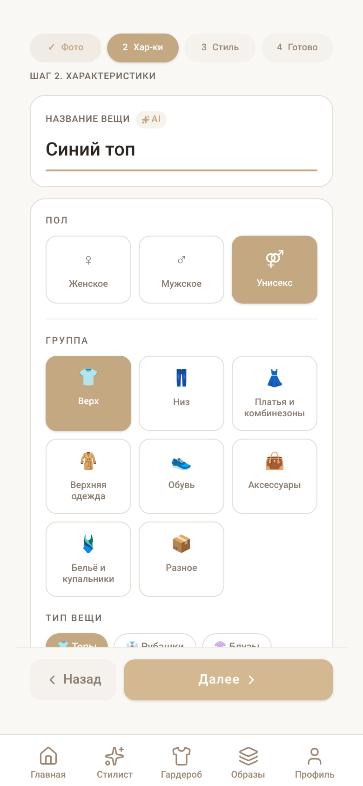
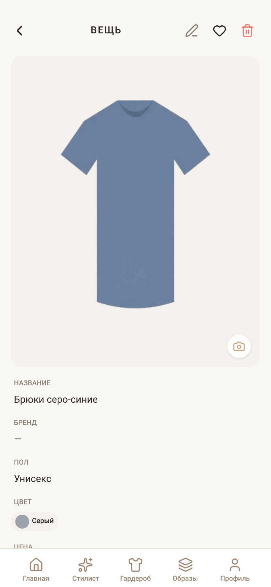

Добавление по фото
Мастер из четырёх шагов: снимок или галерея, удаление фона, характеристики, стиль. Название и категория подставляются автоматически — вы проверяете и правите.
Сфотографируйте вещь — приложение снимет фон, определит цвет и категорию, а затем подберёт образ на сегодня с учётом погоды, стиля и сезона.
Android 7+ · без облачного AI · данные на устройстве

Приложение не просто хранит фотографии — оно превращает их в понятную одежду, из которой можно составлять образы.
Мастер из четырёх шагов: снимок или галерея, удаление фона, характеристики, стиль. Название и категория подставляются автоматически — вы проверяете и правите.
Образы собираются по двенадцати факторам: цветовая гармония, стиль, сезон, ткань, фасон, узоры, формальность, бренд и погода.
Образ дня учитывает температуру и осадки в вашем городе: в дождь подберёт практичнее, в жару — легче.
Гардероб фильтруется по категории, полу, сезону и сортировке. Любимые вещи отмечаются в один тап и не теряются в общем списке.
Если бросить мастер на полпути, черновик сохранится вместе с фото — вернётесь и продолжите с того же шага.
Новая версия приходит прямо в профиль: приложение само проверяет релиз, показывает список изменений и открывает установщик Android.
Никаких баннеров и рекламы: тёплая палитра, крупные зоны нажатия и понятная иерархия.

Сетка вещей, фильтры в одну строку, избранное и быстрый переход к деталям.

Фото, характеристики, стиль и проверка. Название и категория — из локального анализа.

Все характеристики на одном экране, любую из них можно изменить по месту.
Камера или галерея. Можно перетащить файл прямо в окно на компьютере.
Приложение снимет фон и предложит название, цвет, категорию и сезон.
Стиль, повод и настроение — или оставьте то, что предложил AI.
Стилист собирает комплекты под погоду, сезон и настроение на сегодня.
Анализ фотографий выполняется на устройстве: удаление фона и определение цвета работают локально. Мы не отправляем ни фото, ни списки вещей сторонним AI-сервисам и не собираем статистику использования.
Установите Android-сборку WiseWear, добавьте первые вещи по фото и попробуйте локального AI-стилиста. Новые версии можно получать прямо из приложения.